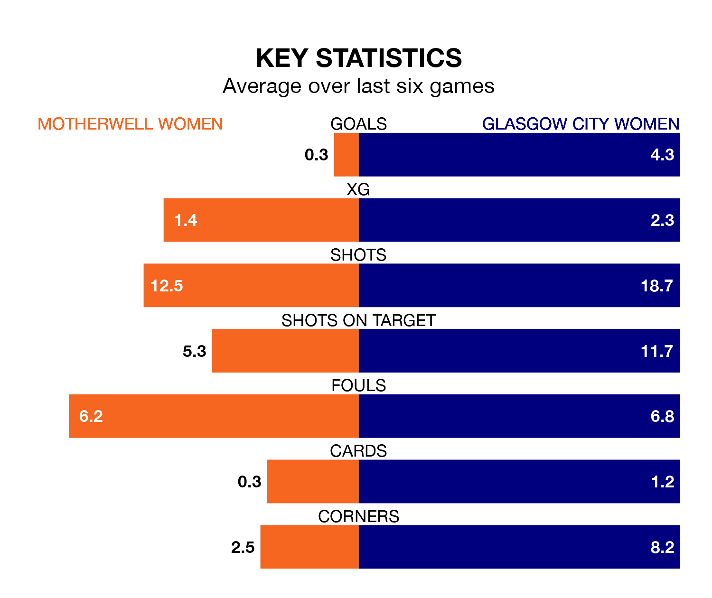

Glasgow City Women visit Motherwell Women at K Park Training Academy on Sunday on the back of eight consecutive wins in SWPL 1.
It means Glasgow City have picked up the maximum 24 points from their last eight games, and they face a Motherwell side who have lost their last four matches, and collected four points from the last possible 24.
With 61 goals in 20 games so far this season, Glasgow City are the league's third-highest scorers with 3.0 goals per game. And they are conceding fewer than average, letting in 12 goals at a rate of 0.6 per game.
Motherwell, meanwhile, are below average scorers, with 1.3 goals per game, compared to a league average of 2.1. They have conceded 2.6 goals per game.
In the last 10 years, Motherwell and Glasgow City have played each other on nine occasions. Glasgow City won all of them.
On average, Motherwell scored 0.4 goals and Glasgow City 4.4 in those matches.
Their last meeting was on August 23, when Glasgow City won 4-1 at home.
In Lee Alexander, the away team can rely on one of the league's safest pair of hands. She has kept six clean sheets in her 12 appearances this season, and only two other 'keepers – Rangers Women's Jenna Fife and Celtic Women's Kelsey Daugherty – have been able to prevent the opposition scoring on more occasions in SWPL 1.
In the hosts' net, Emily Mutch has four clean sheets in 19 games. She has conceded a goal every 36 minutes, four times as often as the 135 minutes between goals for Alexander.
Glasgow City are third in the table after 20 games, of which they have won 16 and drawn two, earning 50 points.
Motherwell are five places behind Glasgow City in eighth, with five wins and one draw putting them on 16 points.
Motherwell's last match was on February 11, a 2-1 loss against Hamilton Academical.
Glasgow City beat Montrose Women 5-1 last time out, also on February 11, with Fiona Brown (two), Carlee Giammona, Kenzie Weir and Mairead Fulton on the scoresheet.
Updated: 13:04 (UTC), 16/02/24